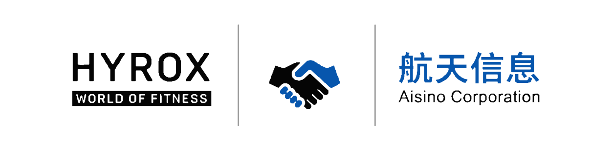

01
风险不是“网慢”
真正风险是关键业务出问题时，无法快速判断故障发生在哪一段，导致恢复时间不可控。

这版测试不把“网络设备”放在第一位，而把甲方最关心的结果放在第一位：Sports Pro、注册、成绩展示、直播和媒体生产等关键业务，不能因为网络故障而失去连续性。
技术细节可以继续验证，但决策层首先要判断：风险是什么、航天信息承担什么价值、北京站是否值得沉淀为中国区标准。
真正风险是关键业务出问题时，无法快速判断故障发生在哪一段，导致恢复时间不可控。
设备只是手段。目标是关键业务具备优先级、冗余、可观测与标准化处置能力。
北京验证后应沉淀架构、验收用例、Runbook、健康报告与设备基线，形成后续赛事可复制标准。